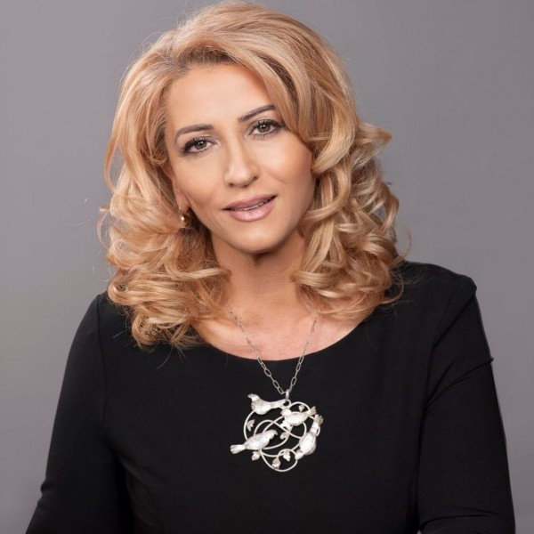

Shkurte Fejza është këngëtare dhe autore këngësh shumë e njohur. Mësimet e fillores i mori në fshatin Mushtisht të qytetit Therandë, ato të së mesmes në Therandë, kurse të lartat në Prizren dhe Prishtinë. Paraqitjet e para në skenë i ka pasur qysh si fëmijë në programet e shkollës, ku u vërejt për herë të parë talenti i saj. "Isha vetëm tuj mendu" titullohej kënga e parë e kënduar nga ajo. Në maj të vitit 1975 merr pjesë në festivalin “Takimet e Majit” në Prizren dhe shpërblehet me Çmimin “Debutantja më e suksesshme”. Shkrimin e parë për Shkurte Fejzën e ka bërë atdhetari ynë i madh Jusuf Gërvalla, në gazetën e vetme të asaj kohe “Rilindja” në vitin 1975. Në këtë vit themelohet Shoqëria Kulturo-Artistike “Afërdita” në Mushtisht, në të cilën shoqëri, Shkurte Fejza ishte anëtare prej ditës së parë. Shumë shpejt kjo shoqëri u bë e njohur në të gjitha anët e botës shqiptare
